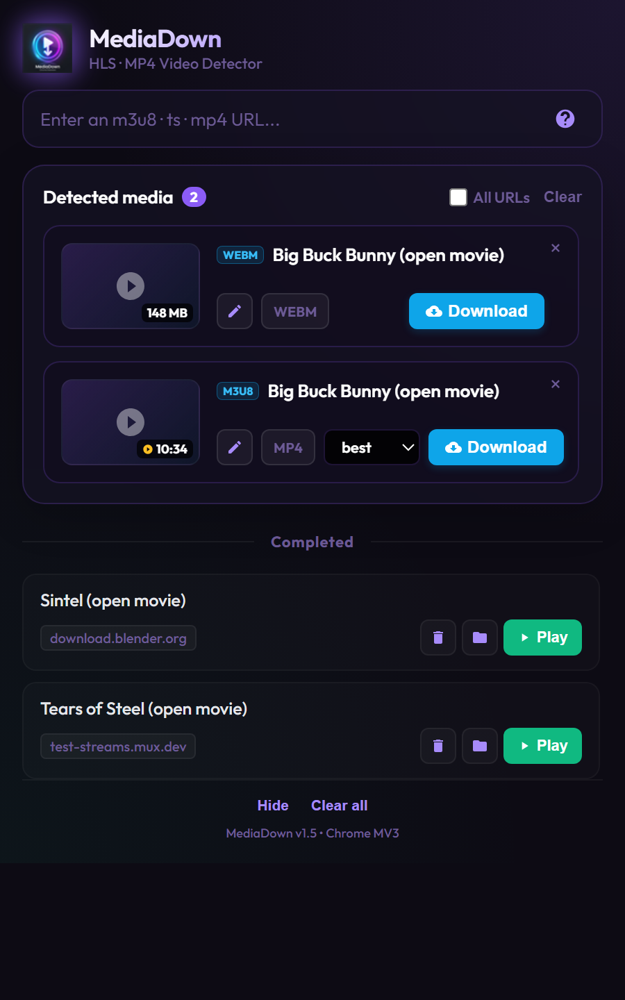

Every playing video,
listed once
Detects HLS (.m3u8) streams and MP4/WebM files,
groups the quality variants into one entry
and lets you pick the quality you want.
Detects HLS (.m3u8) streams and MP4/WebM files,
groups the quality variants into one entry
and lets you pick the quality you want.
